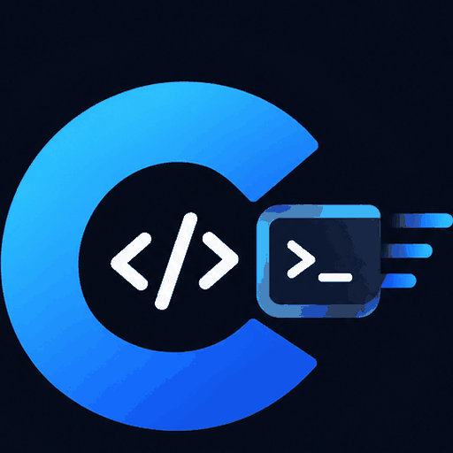
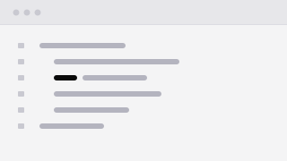
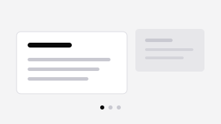
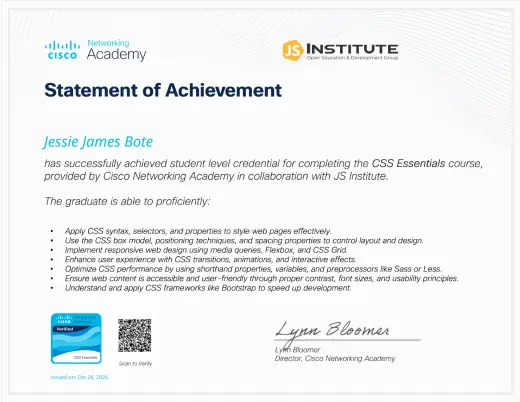
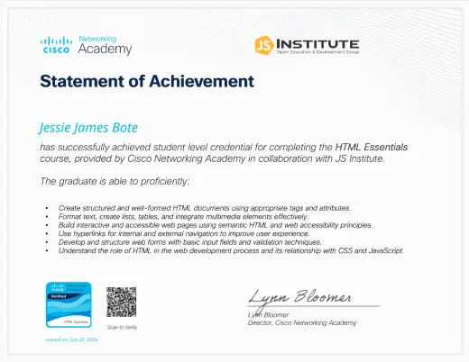
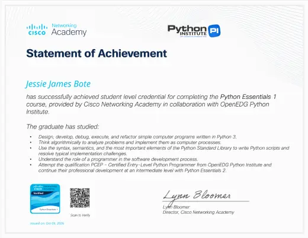
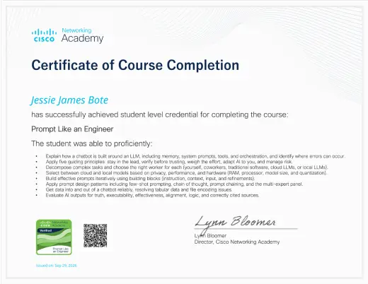

cpractice
An AI-assisted C practice platform. The model explains, but a validated test suite decides whether a submission actually passes.
I’m a first-year BSIT student at Bukidnon State University. Most of what I know came from building things: a C practice tool, a few small command-line programs, and this site.
My interests are systems, security, and interface design. Right now I’m working through CS50x and Cisco’s ethical hacking course.
My goal is to get good enough at all three to work on software that other people depend on — and to keep shipping small things while I get there.

An AI-assisted C practice platform. The model explains, but a validated test suite decides whether a submission actually passes.

A running compilation of code from my BSIT coursework at BukSU — exercises, activities, and notes.

The slide deck I built for our C++ and Godot Engine worksheet session, in two versions, filed with the rest of my coursework.




For school work, collaborations, or just to say hello — my inbox is open.